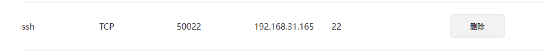
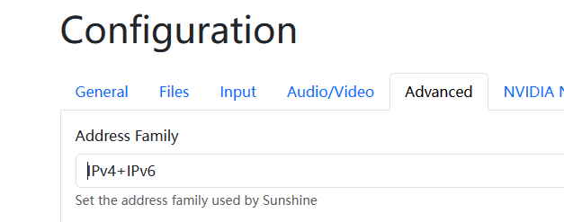
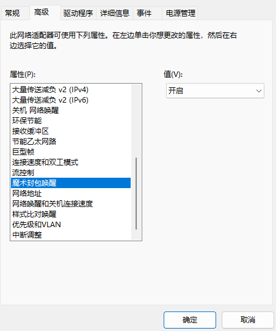
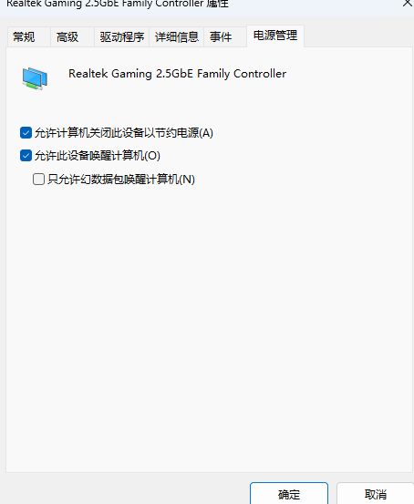

如何优雅的远程访问另一台电脑
前阵子研究了一下远程连接的问题
这个问题主要分有无公网IP两大类，之后考虑需求又有不同的方法，如何判断是否是公网IP的可以直接百度。
有公网IP
文件传输
onedrive
这基本是简单的需求了，低成本低容量需求的话，onedrive是个不错的选择，免费版5G，可以淘宝花几块钱永久扩容到15G，对于一些小文档储存够用，优点是跟其他方法比起来操作起来简单方便，全平台同步，安卓平台可以下个office365就可以随时随地访问了。缺点是容量小，速度慢。当然，加钱也是可以的，拼车365的家庭版，1TB的空间，全套office，一年50左右，性价比还可以。
ssh
另一种方法是ssh连接，它是一种专门为远程登录、连接而制定的一种加密网络传输协议。使用起来也很简单。可以参考这个视频，讲的很详细。
如何优雅地访问远程主机？SSH与frp内网穿透配置教程_哔哩哔哩_
简单来说，要在windows中使用ssh的话，按以下步骤来就好：
首先在设置里的可选功能中找到OpenSSH客户端和服务器，前者是你用来远程访问其它电脑时使用的电脑要安装的，后者就是被远程连接的windows要安装的。
之后在服务中找到OpenSSH的两项服务，开启服务并配置类型为自动。
使用命令连接即可，其中是目标用户文件夹下那个文件夹名，-p用于指定端口
1
ssh username@IP -p 端口号
这里就需要用到公网IP了，如果是静态IPV6，那么直接输入电脑的IPV6地址即可。如果是路由器wan口连接的公网IPV4，就需要在路由器里配置固定mac与IP以及端口转发，ssh默认端口为22，可以将路由器的22端口转发到本地的其他没使用的端口即可，例如这里将50022映射到内网的22端口，192.168.31.165是设备的内网IP地址。

这样就能通过公网IP加端口转发的方式实现远程访问了，即使不在同一局域网。
除了使用自带的命令行，还可以使用MobaXtrem等远程连接的软件，相比cmd，这些软件能直观的看到文件目录，在传输文件时更为方便。同样，vscode也可以实现ssh远程连接的功能，在上面提到的视频中有详细的教程。

免密登录
在输入上面的命令之后，会发现需要输 入密码来登录，如果每次都需要密码的话，就太麻烦了，所以需要配置免密登录。具体配置方法在上面的视频中也有提到。简单步骤如下：
- 客户端命令行中输入
ssh-keygen来生成密钥，密钥位置在user/.ssh文件夹中，密钥分为公钥和私钥，分别存放在id_rsa.pub和id_rsa文件中，私钥要保存好不要泄露，公钥可以公开给其他人。 - 将公钥copy到服务端中，这里有多种方法，可以使用命令
**ssh-copy-id -i id_rsa.pub username@ip -p 端口号**来直接将公钥copy到服务端中，也可以用cat id_rsa.pub命令来打开公钥文件手动复制。第二种方法会在命令行中出现一个以ssh-rsa开头的很长的字符串，直接复制，然后到服务端的.ssh文件夹中新建一个名为authorized_keys的文件，将复制的这个公钥粘贴进去即可。
这样再次登录时就不需要输入密码了，成功实现了免密登录。
在.ssh文件夹里除了公钥和私钥文件外，你还会发现known_hosts文件和你刚刚生成的authorized_keys这两个文件有什么用呢？前者会在你通过ssh连接其他远程服务器时生成，里面记录了连接过的服务器的信息，下次连接时会比对信息是否一致，如果不一致会发出警告。而后者就是服务端保存连接过的客户端的公钥，公钥保存在这里的客服端登录这个服务端时就不需要再输入密码了。
图形化需求
微软远程桌面
这是一个windows自带的软件，直接搜索远程桌面连接即可打开，打开以后界面长这个样子，使用的同样是IP地址:端口号的方式，使用的端口号是3389，所以路由器是公网IPV4的同样需要去路由器中设置端口转发，将公网的3389端口转发到内网的其他端口，然后登陆即可。第一次登录会让你输入密码，密码是服务端登录微软账号的密码，而非锁屏密码。之后会账号数据会保存在客服端的凭据管理器中，不再需要密码。

串流
使用moonlight串流是一个不错的方案，也是我一直在用的方案，moonlight是一个通过实时压缩和传输影音的技术，支持windows、安卓，所以无论是笔记本还是平板，甚至手机都可以使用。详细可以参考这个视频【看番教程】支持4K、360Hz的远程串流，纯免费，极低延迟+优秀的画面，moonlight详细使用教学。
客户端需要在官网Moonlight Game Streaming下载moonlight软件，被串流的服务端不需要下载moonlight，服务端要下载的是Sunshine，这是解码端。
下载完成后，服务端打开sunshine的webUI，首次打开需要设置用户名和密码，要牢记自己设置的用户名和密码。需要使用IPV6进行串流的要进入设置里的advanced中打开下图的设置，并到网页最下端点击保存。
随后打开客户端的moonlight，如果在用一个局域网可以直接搜索到，搜索不到的点击加号手动添加，路由器公网IPV4的需要设置端口转发，端口号默认为47989，可以在sunshine的webUI中的advanced更改。公网IPV6的直接输入即可。首次串流时客户端的moonlight会发送一个4位的code，输入到服务端的sunshine即可，同一设备之后串流不需要再输入。
wake on lan
sunshine支持wake on lan，也就是远程唤醒，参考这个视频【看番教程】通过网络启动家中电脑、NAS，WOL保姆级详细教学_
- 打开主板中的允许PCIE设备唤醒或者wake on lan等选项（不同主板可能不同）
- 找到网卡属性，高级，将魔术封包唤醒选项设置为开启
- 电源管理前两项勾选

- 电源选项中将快速启动关闭
- 再路由器中设置MAC与IP地址绑定以及ARP绑定
这样关机后就可以通过moonlight实现远程开机了